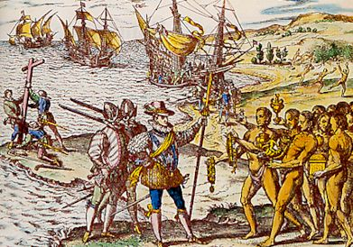

Pour répondre à cette question il faut étudier l'histoire de Haïti de son indépendance à aujourd'hui (21 ème siècle).
Saint-Domingue, une ancienne colonie
Les peuples de culture Arawak, Caraïbes et Taïnos occupent l’île avant l’arrivée des Espagnols. Christophe Colomb, débarquant le 5 décembre 1492 la nomme Hispaniola alors que les indigènes la nommaient de trois façons : Ayiti, Quisqueya et Bohio. L'arrivée de Christophe Colomb :

On estime qu’environ 100 000 indigènes peuplaient l’île d'Hispaniola à la fin du XVe siècle. Les Espagnols exploitent l’île pour son or. Les Amérindiens refusant de travailler dans les mines sont massacrés et réduits en esclavage ; les rares personnes qui réussissent à s’échapper trouvent refuge dans les montagnes et sont marginalisées et fortement paupérisées. Les maladies infectieuses arrivées avec les Européens font des ravages ; les mauvais traitements, la dénutrition et la baisse de natalité font le reste : la population indigène est exterminée en quelques décennies. Les Espagnols font alors venir d’Afrique des esclaves noirs déportés. En 1517, Charles Quint autorise la traite des esclaves, qu’il interdira dès la décennie suivante, mais sans succès, pas plus qu’ensuite le pape Paul III. La partie ouest d’Hispaniola, dépourvue de minerai, est vite négligée par les colons espagnols qui la laissent vide. Des boucaniers français s’y installent, malgré plusieurs expéditions militaires espagnoles. Au XVIIe siècle, sous l’autorité du cardinal de Richelieu, l’installation française s’institutionnalise. L’île de la Tortue, au nord ouest d’Hispaniola, devient le siège de la flibuste. Ces aventuriers gagnent peu à peu la « Grande terre » : en 1654, ils créent la première ville de la future Saint-Domingue : Petit-Goâve. Le premier gouverneur de la colonie est Bertrand d’Ogeron, nommé en 1665. Sachant se faire accepter des flibustiers, il organise la colonisation par la venue de Français qui s’engagent à travailler trois ans avant de devenir propriétaires de terres (on les appelait les « 36 mois »). Il favorise la plantation de tabac. Ainsi, il sédentarise une population de boucaniers et de flibustiers peu portée à accepter l’autorité royale jusqu’aux années 1660. Bertrand d’Orgeron attire aussi des colons de Martinique et de Guadeloupe. Mais en 1670-1690 intervient la crise du tabac et un grand nombre de places furent abandonnées. Les rangs de la flibuste grossissent, les pillages, comme ceux de Vera Cruz en 1683 ou de Campêche en 1686, se multiplient et Jean-Baptiste Colbert, ministre de la Marine, ramène l’ordre en prenant un grand nombre de mesures. Il transfère le gouvernement à Port-de-Paix en 1676. Il encourage la création de plantations d’indigo et de canne à sucre. Le premier moulin à sucre est créé en 1685. Enfin, il réglemente l'esclavage en préparant le Code noir (qui sera promulgué en 1685, après sa mort). L'ensemble de ces actions permet l'essor économique de la colonie. À la suite du traité de Ryswick de 1697 et à l'accession au trône d'Espagne d'un petit-fils de Louis XIV, les Espagnols renoncent à contester la souveraineté de la France sur le tiers occidental de l'île. La France officialise le nom de Saint-Domingue, pour cette partie. C’est alors que viennent de France de nombreux colons qui développent les plantations ou travaillent dans celles-ci. De 1713 à 1787, 30 000 Français viennent grossir le nombre des colons présents dans la partie Ouest de l’île. Les guerres éclatent en Europe et se prolongent sur les mers jusqu’aux Antilles et aux Caraïbes. En 1756, le commerce est paralysé. Un grand nombre de colons et leurs familles quittent Saint-Domingue pour la Louisiane, où ils s’installent dans des Postes établis par la France et administrés par des militaires. Vers 1790, Saint-Domingue est la colonie française la plus riche de toute l'Amérique grâce aux profits immenses de l'industrie sucrière et de celle de l’indigo générés par le travail des esclaves. Des dizaines de milliers d'Africains avaient été amenés comme esclaves pour faire fonctionner ces industries. Leur sort est juridiquement encadré par le code noir, mais, dans les faits, ils subissent des traitements souvent pires que ceux dudit code. Leur nombre (400 000) est dix fois plus élevé que celui des blancs.
La naissance de Haïti
La Révolution française entraîne de graves bouleversements sociaux dans les petites Antilles comme à Saint-Domingue. Le plus important est la révolte des esclaves qui aboutit en 1793 à l’abolition de l'esclavage par les commissaires civils Sonthonax et Polverel, décision avalisée et généralisée à l’ensemble des colonies françaises par la Convention six mois plus tard (première abolition de l'esclavage le 16 pluviose an II, donc le 4 février 1794). Toussaint Louverture, nommé gouverneur général à vie de Saint-Domingue par la France, après avoir rétabli la paix, chassa les Espagnols et les Anglais qui menaçaient la colonie, rétablit la prospérité par des mesures audacieuses. La promulgation d’une constitution autonomiste provoque une réaction de la France : Napoléon Bonaparte, sous l’influence des Créoles (Français et Espagnols nés sur l’une des îles des Antilles, plus tard en Louisiane aussi) et des négociants, envoie une expédition de 30 000 hommes sous les ordres de son beau-frère le général Leclerc avec pour mission de démettre Louverture et rétablir l'esclavage. Mais, après quelques victoires, l’arrestation (faux rendez-vous diplomatique, avec promesse de Bonaparte de sauf-conduit, non respectée) et la déportation de Toussaint Louverture arrêté le 7 juin 1802, les troupes françaises, décimées par la fièvre jaune, commandées par Rochambeau, sont battues à la bataille de Vertières par Jean-Jacques Dessalines, qui a rejoint l'insurrection (et avec l'aide des Anglais qui combattent les soldats français et soutiennent les combats des esclaves, et qui voulaient se venger de l'aide française aux insurgés américains). Au terme d’une double bataille, la Déclaration d’indépendance18 du pays est proclamée le 1er janvier 1804. Le nom d'Haïti (ancien nom de l'île du temps des Indiens Caraïbes) est donné au pays. Haïti est le premier pays au monde issu d'une révolte d'esclaves.
Une période troublée
Dessalines est proclamé gouverneur à vie par ses troupes. L’histoire rapporte qu’il exécuta la plupart des quelque 10 000 Blancs restés sur l’île et gouverna en despote. Il est assassiné à son tour le 17 octobre 1806 par des mulâtres. Le pays se divise alors en deux, un royaume au nord commandé par le roi Henri Christophe et une république au sud avec le mulâtre Alexandre Pétion. En 1822, le président Jean Pierre Boyer réunifie les deux parties Nord et Sud et conquiert la partie est de l'île, colonie espagnole. Le président Pétion initie des négociations pour la reconnaissance d’Haïti en 1814. Elles durent jusqu’en 1824. Le 11 juillet 1825, le roi de France Charles X promulgue une ordonnance reconnaissant l’indépendance du pays contre une indemnité de 150 millions de francs-or (la somme sera ramenée par Louis-Philippe Ier en 1838 à 90 millions de francs). Le 27 février 1844, malgré les attaques incessantes de la part des Haïtiens, la République dominicaine se déclare à nouveau indépendante. L'occupation de la partie espagnole de l'île d'Hispaniola pendant 22 ans par les Haïtiens — qui y commettent exactions et abus de pouvoir à répétition — a ainsi laissé un fort mauvais souvenir aux Dominicains. Une longue succession de coups d’État suit le départ de Jean Pierre Boyer. Le président Louis Pierrot, qui reste moins d'un an au pouvoir, rétablit en 1846 la mémoire de l'empereur Jean-Jacques Dessalines. Le pouvoir ne cesse d’être contesté par des factions de l’armée, les élites mulâtre et noires, et la classe marchande, désormais composée majoritairement d’étrangers (Allemands, Américains, Français et Anglais). Le pays s’appauvrit, peu de chefs d’État se préoccupent de son développement. Dès que le pouvoir se fragilise, des révoltes armées se déclenchent, entretenues par les candidats à la succession. En 1847, Faustin Soulouque est élu président de la République : il transforme le pays en empire d'Haïti le 25 août 1849 et devient Faustin Ier. Despote, il fuit le pays à la suite d'un soulèvement populaire en 1859. Au début du XXe siècle, le pays est en état d’insurrection quasi permanente. Cet état de fait favorise l’invasion de l’île par les troupes du président Wilson en 1915 pour contrer l’influence de l’Empire allemand, rétablir l'ordre après la mort du président Guillaume Sam aux mains d'un peuple en furie et défendre les intérêts de la banque d'affaires américaine Kuhn, Loeb & co. Les États-Unis après des débuts difficiles dus au racisme des Marines et l'imposition de la corvée occupent l’île de 1915 à 1934, assainissent les finances publiques, créent une armée, construisent des écoles, des routes, etc. Après le départ des Américains, l’instabilité politique (entre militaires mulâtres et populistes noirs) reprend, et ne s’achève qu’à partir de 1957 avec l'élection de Duvalier, dont le régime basé sur le principe du pouvoir au plus grand nombre durera jusqu’en 1986. Partisan de la lutte contre les mulâtres qui contrôlent l'armée et qui ont précédemment renversé le noiriste Dumarsais Estimé, François Duvalier, le père (alias « Papa Doc »), assied son pouvoir personnel sur la délation et alimente la terreur à l’aide de ses partisans surnommés tontons macoutes, véritables escadrons de la mort. La dictature des Duvalier est responsable de nombreuses tueries, de massacres d’opposants et de civils, tel celui de la ville de Jérémie, connu sous le nom « Vêpres jérémiennes » en 1964. De nombreux Haïtiens s'exilent, notamment aux États-Unis et au Canada, ou certains, partisans du pouvoir aux plus capables et qui avaient jusque-là monopolisé le pouvoir politique et militaire se posent en victimes du régime Duvalier. En 1986, son fils Jean-Claude (alias « Baby Doc ») doit quitter le pays, qui connaît alors une véritable descente aux enfers alors que la démocratie espérée par tous ne se concrétise pas.
Conclusion
Haïti a connu des périodes troublées et c'est à cause de cela que le pays n'a pas eut de bon départ si on peut le dire. Entre les français qui demandaient 150 millions de francs et la démocratie qui étaient menacées, le pays n'a pas eu le temps de se développer culturellement, économiquement et politiquement même si de nos il tente de se rattraper, les épidémies (notamment de Choléra) et les tremblements de terre et autres ouragans n'aident pas.